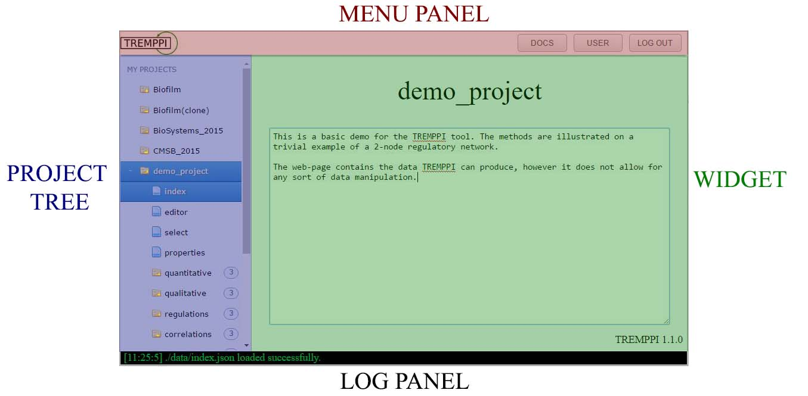

TREMPPI 1.3.1
Toolkit for Reverse Engineering of Molecular Pathways via Parameter Identification
Last update: 28.02.2017
Introduction
This the homepage of TREMPPI, a systems biology toolkit for research in gene regulation and molecular signalling.
This fully integrated, visual toolkit is well suited for the analysis of complex functional modules, e.g. circadian clock.
TREMPPI supports multiple ways of encoding various biological knowledge about the system.
The goal is to provide as much information as possible about how the structure of the system is likely to look.
Such an approach is most valuable if the precise mechanics of the module in question are not known.
In this scenario we simply consider all the possibilities for how the components of the module may interact and analyse them one by one.
This is a computationally very demanding task. To this end we are employing a coarse-grained modelling framework of logical networks, focusing solely on qualitative features of a model.
For an example of use see [2].
For a better perspective, you can examine a toy project.
Get TREMPPI
The easiest way of getting TREMPPI is to download pre-built packages:
For all systems you need the Python 3
and the Flask-user package, which you can install via the PIP package manage.
On Windows (also on Linux if it is in a non-standard location, the environment points to Python 2, etc.) PYTHONHOME must point to Python 3 location.
This can be achieved temporarily from a Unix terminal by calling:
export PYTHONHOME=path_to_python3
path_to_TREMPPI/tremppi
On Windows from the cmd tool by calling:
set PYTHONHOME=path_to_python3
path_to_TREMPPI\tremppi.exe
If your system is not in the list, or the binary does not work
(in that case also please consider sharing your experience at tremppi.server gmail.com),
you can try building it from the source at GITHUB.
gmail.com),
you can try building it from the source at GITHUB.
License and Liability
TREMPPI is distributed under the GNU GPL v3 licence.
TREMPPI is a free software, distributed with no warranties. The developers bear no liability for any problems connected to using the software.
Updating
To update TREMPPI to a newer version, simply extract the package to your TREMPPI folder. It will replace source files without affecting your projects.
To update a project, open that project in TREMPPI and call the update tool. All the existing projects retain their original version until they are individually updated.
Usage
In this section we go through some usage topics of TREMPPI. The complete reference is in the following section.
Visual interface
TREMPPI has a fully integrated graphical user interface that displays in a browser.
The tool is split into individual webpages, each providing access to a part of functionality of TREMPPI, however each of the pages is divided in the following four parts:

-
MENU PANEL: this panel provides user controls and top-level navigation.
-
PROJECT TREE: shows the existing projects and their widgets and sub-files.
A left-click opens a project or widget, while a right-click provides a context menu that provides file-system like functions, like deletion, copying etc.
-
WIDGET: Widgets connect to TREMPPI directly, show the data and provide the analytical and statistical tools.
-
LOG PANEL: The bottom log panel displays the immediate info from TREMPPI and is related only to the web-page itself.
A green text shows info, an orange one warnings, and a red one errors.
Model creation
For modelling we are using the Thomas Framework, as detailed in [3].
The project is composed of components (nodes) and regulations (edges).
Each component v has to have assigned to it a maximum activity level value, denoted ρ(v),
meaning that v can occur in a state between 0 and ρ(v).
Also each regulation takes on a value, here called threshold.
The regulation is then active only once the state of the component is higher or equal to the threshold.
Once the network is finished, the next step is to enumerate all the models fitting the network.
This is done via the spawn tool.
This tool considers all possible regulatory function for each component and enumerates all possible combinations thereof.
Labels
After the models are enumerated, each of them can be labelled for various properties. In particular, there are the following labels:
-
Kv(ω) ∈ [0,ρ(v)]
is the parameter value for the component v in the context (a set of states fitting the configuration) ω.
The symbol ρ(v) denotes the maximum activity of v.
-
bias(v) ∈ [0.0,1.0]
denotes how much is the component v biased towards the lower or higher activity levels.
-
impact(u,t,v) ∈ [-1.0,1.0]
denotes how prominent is the regulation (u,t,v).
Values close to -1.0 denote a strong inhibition,
the ones close to 0.0 denote weak effect,
and the ones close to 1.0 denote a strong activation.
-
sign(u,t,v) ∈ {0,+,-,1}
is the sign of the (u,t,v).
The value 0 denotes no effect,
the value + activation,
the value - inhibition,
and the value 1 activation and inhibition at once.
-
cost(property) ∈ [0,2147483648]
denotes how many simulation steps it takes to satisfy the property (see the following section for details).
The lower the better, however the special value 0 means it is not possible at all.
-
robustness(property) ∈ [0.0,1.0]
denotes how probably it is that the property is satisfied.
Model checking
We employ a custom LTL model checking procedure for dynamical analysis [5].
Through the properties widget one can specify a list of properties, which can be tested on the parametrizations.
There are three model checking functions:
- cost: creates the cost(property) label for each selected property. If the label value is non-zero, the property is satisfied.
- robustness: creates the robustness(property) label.
- trace: stores the traces for satisfiable properties. There are not listed anywhere, but are used and required by the witness tool.
A transition system of 4 Boolean components.
A path of cost = 3 for the property with M1 = (1,1,1,*) and M2 = (*,0,0,*) and open ending.
The same property as on the left, however this time with the stable ending.
The same property as on the left, however this time with the cyclic ending.
The property M1 = (1,1,0,1), M2 = (1,0,0,*), and M3 = (0,0,0,1)
and monotonicity in all components.
The red path shows a trace that will not be accepted, because the fourth component is not monotonous between M2) and M3.
The green path is monotonous and will be accepted.
Command line
Each of the individual tools of TREMPPI can be executed from the command line. To see the available commands, call
tremppi --help
Each of the commands can be then executed by calling:
tremppi command [--path path_to_project]
where command is the requested command, and path_to_project is the system path to the project where the tool should be called.
If no path is specified, the current directory is used.
Lastly to create a new project from the command line, call
tremppi init project_name [--path path_to_folder]
where project_name is the name of the new project and path_to_folder is the location where the project should be created.
Project structure
By default, TREMPPI uses the projects folder in its home folder to store the projects.
This is where project_0 is created upon the start of the tool and where all the project data are stored.
By default, the project folder also contains multiple projects.
It is however possible to use and distribute projects individually.
To this end, TREMPPI can be started from the command line with the command tremppi browse --path project_path
where project_path points to the location of the project of interest.
In this case TREMPPI will be started in the single-project mode.
If project_path does not point to a folder with a project, but to a folder that holds at least one folder with a TREMPPI project,
then TREMPPI will be started in the normal mode, however project_path will replace the default projects folder.
Publishing
Once it is finished, a project can be easily published on-line or shared without any further need for TREMPPI itself.
To do so, first remove unnecessary data by pressing the FINALIZE button.
Caution, this is an irreversible action and will make the project immutable.
If you want to continue to work on your project, clone it first.
After that, navigate to the projects folder---you can distribute the project by copying the containing folder.
To view the project, you do not need TREMPPI anymore, and can use one of the following approaches.
-
Copy the project onto an existing HTTP server, e.g. you University homepage.
-
Start a local HTML server in the project folder.
If Python 2 is available, this can be done by the command python -m SimpleHTTPServer 8080.
If Python 3 is available, then by the command python -m http.server 8080.
- Open the file index.html in a browser.
This way is not supported by the Google Chrome browser, due to security restrictions.
Other browsers may also cause problem.
Note that a finalized project does not contain any project managements tools anymore, therefore, if the user wishes to remove the project, it must be erased from the system manually.
Tables
Some of the widgets (select, properties) feature editable tables.
There is a joint control scheme for the tables, and the following buttons are always available:
-
↓ Currently selected row(s) is/are moved down a single row.
-
↑ Currently selected row(s) is/are moved up a single row.
-
Add Creates a new row at the end of the table.
-
Duplicate Currently selected row(s) is/are duplicated.
-
Delete Currently selected row(s) is/are erased.
In the case there is an option to select elements, i.e. each row has a checkbox as its first element, there is an additional button:
-
All Select (click once) or deselect (click twice) all the rows.
Reference
Project tree
Project Tree has four levels of depth, each with it's unique features:
- Projects:The top-level tab is called projects and is used for creation of new projects. It has two options:
- new project: Creates a new project from scratch. Will be called project_0 or a higher index if this is taken.
- upload: Allows to upload a project in the .zip format.
- Project:The individual project's folder. In here all the data relating to a single project are stored. It has multiple options:
- open: Opens the project in the current widget.
- clone: Creates a deep copy of the project named project(clone)
- rename: Assigns a new name to the project.
- delete: Removes the project.
- finalize: Removes the background (not visible to user) data from the project and prohibits further analyses. The reports stay untouched. This usually reduced the size of the project to a fraction and is useful when you want to distribute your results.
- download: Makes a zip archive that can be uploaded to another instance of TREMPPI.
- Widget:A specific project widget. This can be either a single page, or a collection of files.
- open: Opens the selected widget for the current project.
- save:
TREMPPI saves files automatically when exiting current widget.
However to be secure against e.g. system crash, you can call that manually.
Available only on the currently open widget.
- save:
TREMPPI saves files automatically when exiting current widget.
However to be secure against e.g. system crash, you can call that manually.
Available only on the currently open widget.
- Report file:For reporting widgets, like qualitative these are the specific report files.
- open: Opens the selected file.
- compare: Creates a report comparison between the opened file and the selected file.
- rename: Assigns a new name to the file.
- delete: Removes the file.
Index
This is the entry point of a project.
The purpose of this widget is purely for documentation.
Editor
The editor is used to create the regulatory network, see [3] for details.
- To create a component, click the new button and then empty space.
- To create a regulation, click the new button, then the source component and lastly the target component.
- The component has a Name and a Maximal Activity Level.
When you select a component, these appear on the top of the page, where the value can be replaced.
- Similarly, after selecting an edge, the Threshold value and the edge Label can be selected. The meaning of the labels is explained in detail in [4].
- For multi-valued models, the Apply Normalization feature can be used to remove duplicities of the same model. See [6] for reference.
Note that the changes are applied to graph only after the enter button is pressed.
Select
Selection is one of the core notions of TREMPPI.
In the intuitive terms, selection is a condition each model must satisfy to be selected.
This is used to label/analyse only certain models in the pool, which is crucial mainly for the analysis step.
For each label that is available in the database, there is an option to create a selection condition.
First, click add to create a new selection and write a new name for it.
Then for each label that is of an interest add the selection conditions.
There are multiple different expressions one can write in a selection field. In the following we will use the symbol l to denote a label:
- X either an integer or a floating point number with delimited by the dot symbol (.).
In such a case, all parametrizations must have the value of the label, i.e. it is required that l = X.
For example we can require that KA(0) = 0 or that bias(A) = 0.5.
- !X is an addition to the condition (1) that states its opposite, i.e. l ≠ X in all the parametrizations.
- (X,Y) where X and Y are numbers as explained in (1).
Here we require the value to be in the given range with the boundaries not lying in the range.
E.g. (0,1) means that l > 0 and l < 0.
- [X,Y), or (X,Y], or (X,Y) is the same as (3) but the values after square bracket belong to the range.
E.g. [0.5,1] means that l ≥ 0.5 and l ≤ 0.
- !(X,Y), or ![X,Y), or !(X,Y], or !(X,Y) negates the elements of (3) and (4).
E.g. !(4,6] means that either l ≤ 4 or l > 6.
- (X,) and [X,) are one-sided intervals with and without inclusion of X, respectively.
E.g. (0,) means all values greater than zero. Square bracket can be used as closing one without any change to the semantics.
- (,X) and (,X] are the right-sided equivalent of (6).
- The sign label is an exception and is provided with a selection of one of four elements: {0,+,-,1}.
All the selections that are checked on the (on the left) are applied in disjunction,
i.e. a model that meets any picked selections is going to be selected.
Properties
Properties page is used to describe discrete formulas used by the validate tool.
The widget is divided into two tables, the top one holds the list of properties, the bottom one the details for a selected property.
The upper table has the following columns:
- Name: this name is then referred to for the cost and robustness values.
- Ending: represents how the model should behave after the last measurement.
This can be either left open (any), or it may be required that it reaches a stable state (any),
or it may be required that from a certain point a measurement gets repeated (goto x),
where (x) is the letter of the measurement that should be repeated, see below.
- Component setup (denoted by the name of each component): use a range or a specific value to fix this component to that range or value.
This field is simpler than the one for the selection, in particular only integer values are allowed and only a single value or a closed range is allowed, i.e. the options 1,3,4 from Section 4.3.
After clicking on a specific property in the upper table, its details are listed in the lower table. The columns are as follows:
- Id: the index of the measurement. Note that the order of measurements is enforced in the model checking and therefore the order in this table matters.
- Value: the level(s) of the specific component in the measurement. As with the setup, only an integer or integer range is allowed here.
- Delta: the monotonicity/transitivity requirement for the component. The value can be:
- no requirement,
- stay: the component must not change its value until the next measurement,
- up: the component must not decrease until the next measurement,
- stay: the component must not increase until the next measurement.
For details see [5].
Reports:
There are currently 5 reporting widgets available.
As a reminder, each widget has a list of reports displayed in the control panel and three panes: the left selection, the comparison, and the right selection.
The left selection is populated by a left click, the right by a right click and the comparison is created automatically.
The comparison shows the results of the difference (left - right), tailored to each of the widgets.
- Quantitative: this report provides the basic quantitative information, i.e. summary about numerical values. In particular there are 5 fields:
- Label: the label and its parameters for this row.
- Count: how often, in the selection, has the label a non-zero value.
- Min: the minimal value in the selection.
- Max: the maximal value in the selection.
- Mean: the mean of the selection.
- Qualitative: this report provides the basic qualitative information, i.e. summary about categorical (and sparse numerical) values. There are only three fields:
- Label: the label and its parameters for this row.
- #: how many distinct values appear in the selection.
- Elements: what portion of the selection each value occupies.
- Regulations:
this is a graph-based report which re-creates the network made in the editor.
The mean impact in the selection is projected to the colour of the regulation,
while the width of a regulation is obtained from its frequency (i.e. how often it takes on a non-zero value).
For the non-positive frequency, the 0 value is displayed dotted and a negative value as dashed.
Both the values have their legend on the bottom.
Lastly, the arrow head is set as the most specific sign fitting all the parametrizations. I.e. if all regulations are non-function, it is a circle. If none are negative,
it is a pointed arrow, if none are positive, it is a blunt arrow, otherwise it is combination of the two.
There is also an additional button:
- Relative: normalize the values in the current report to the boundaries. If all the values are zero, there is no change made.
- Correlations:
a second graph-based report. Here the bias of a component is projected to the width of a frame, again full for positive, dotted for 0, and dashed for negative.
Additionally correlation between bias is computed and displayed as a colour gradient edge between the correlated components.
- Group:
The Group feature is another tool to examine groups of parametrizations.
The group feature creates mutually disjoint sets of parametrizations that match on all they features.
The two parametrizations are considered matching if and only if:
- For each two corresponding regulations those are either 0 or !0.
- For each of the currently selected properties, the cost is either 0 or !0.
For each of the sets, the values of all of these features are displayed.
The value !0 is displayed as 1.
If the value is completely absent, it is displayed as *.
Lastly, the user can turn features on or off.
If a feature is of, the groups that differ only in this feature will be merged.
- Witness:
for a parametrization to satisfy a property, it is required that there exists a path in the transition system that proves that the property is satisfiable.
This path is called a witness.
The witness report provides all the witnesses with the minimal cost, for all the properties selected at once.
The witness is constituted from states, which show what is the current configuration of the components and what is the currently satisfied measurement.
The transitions have width dependent on how often they occur in the traces for any parametrization and any property, i.e. the value is 1 if the transition is present in
trace for every parametrization and every property. Additionally, each transition has a number stating what is the order of that transition in the witness.
The report has again the relative button, projecting the width of the edges to normalized boundaries.
Tools: computational tools
There are currently 5 classes of tools:
- Enumeration:
The enumerate tool takes the network definition from the editor and creates the model pool necessary for all the following tools.
The erase erases the model pool, also erasing also the labels, properties, selections, and the follow-up data. Makes the editor interactive again.
- Static Labels: the tools that label the individual models based on the parameter values. These are fast to compute.
- Properties:
The freeze tool finalises the definition of the properties and enables the selection tool.
The unfreeze tool enables editing of the properties, also erasing the selections, dynamic lables, and the follow-up data.
- Dynamic Labels: the tools that label the individual models based on the properties. These are slow to compute.
- Reports: the statistical analysis tools.
- Utility: three additional tools for maintenance.
The update tool updates the current project to the latest available version.
The configure tool refreshes the configuration of the widgets, mainly the columns of the individual tables, which however should always happen automatically.
The clean this tool removes all the computed data.
There are execution dependences between the tools as illustrated by the following graph:
Additionally there are two additional panels, one for current progress and the other with log history.
The progress panel displays the active tool and the list of tools batched for execution across all the projects. This panel is updated every second.
It also allows to kill all the process at once by pressing the relevant button.
The log panel displays the log history for the tools on the current project.
Bibliography
- A. Streck and H. Siebert. Extensions for LTL model checking of Thomas networks. In: Proceedings of The Strasbourg Spring School on Advances in Systems and Synthetic Biology. Volume 14 (2015)
- K. Thobe, A. Streck, H. Klarner, H. Siebert. Model Integration and Crosstalk Analysis of Logical Regulatory Networks. In: Computational Methods in Systems Biology. Volume 8859 of Lecture Notes in Computer Science. Springer International Publishing (2014)
- H. Klarner, A. Streck, D. Šafránek, J. Kolčák, H. Siebert: Parameter identification and model ranking of Thomas networks. In: Computational Methods for Systems Biology. Volume 7605 of Lecture Notes in Computer Science. Springer Berlin Heidelberg (2012)
- H. Klarner. Contributions to the Analysis of Qualitative Models of Regulatory Networks. Dissertation Thesis (2014)
- A. Streck, K. Thobe, H. Siebert. Analysing Cell Line Specific EGFR Signalling via Optimized Automata Based Model Checking. In: Computational Methods in Systems Biology. Volume 9308 of Lecture Notes in Computer Science. Springer International Publishing (2015)
- A Streck, T Lorenz, H Siebert. Minimization and equivalence in multi-valued logical models of regulatory networks. Natural Computing. Springer Netherlands (2015)